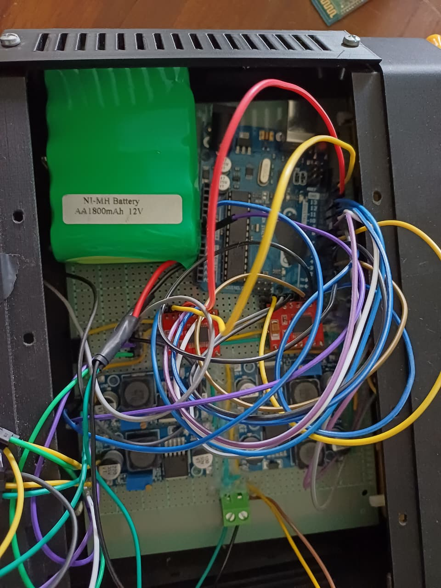
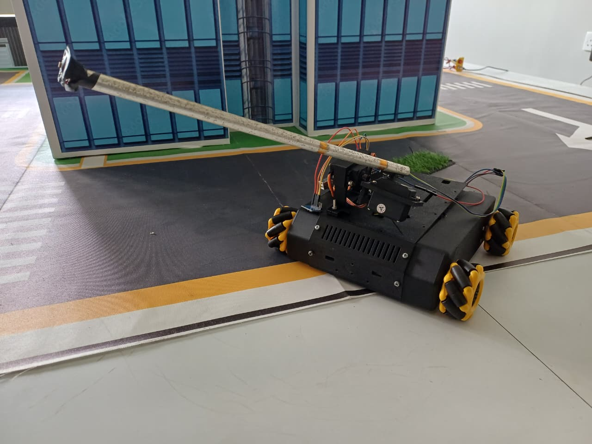

Week 01 - Literature Review
Focus: Existing knowledge and biological active tactile sensing
The primary objective of this phase was to establish a strong theoretical foundation for the project titled "Cancellation of Self-Sensing due to Ego-Motion of Vibration-Based Mechanosensors" . During this week, existing research related to bio-inspired tactile sensing, vibration-based robotic antennae, ego-motion cancellation, and machine learning approaches for sensor signal prediction was studied in detail.
Objective
Establish the biological and theoretical foundation of the self-sensing problem by understanding how insects distinguish environmental contact from vibrations caused by their own movements.
Work Completed
- Find about the previous research papers about the project.
- Studied biological sensing mechanisms used by insects, particularly antenna-based exploration and contact detection.
- Reviewed the effects of ego-motion on vibration-based sensors and the challenges it introduces to contact detection.
- Analyzed previous implementations of robotic antenna systems and tactile navigation platforms.
Main Outcome
Indecated few research paper about the project.
Week 02 - Literature Review
Focus: Existing knowledge and biological active tactile sensing
Further studied about the background, required knowladge and the technical aspect about the project through the indecated research papers.
Objective
Conduct a comprehensive analysis of the selected research papers and compile a structured literature review that summarizes existing approaches, identifies current limitations, and establishes the research direction for the proposed system.
Work Completed
- Reviewed and analyzed key research papers related to vibration-based mechanosensors, bio-inspired robotic antennae, and tactile sensing.
- Compared different ego-motion cancellation techniques, sensing strategies, and machine learning approaches reported in previous studies.
- Identified the strengths, limitations, and research gaps in existing methods.
- Organized the collected information into a structured literature review document following academic writing standards.
- Prepared the literature review report to support the project's methodology and system design.
Main Outcome
Successfully completed the literature review document, providing a comprehensive understanding of existing research, identifying the limitations of current approaches, and establishing a clear technical foundation for the design and implementation of the proposed vibration-based robotic antenna system.
Week 03 - Component Research and Acquisition
Focus: Selecting suitable hardware components
Reasearch about the hardware and other components that required
Objective
Identify and evaluate the hardware components, power supply options, communication modules, and supporting equipment required to develop the vibration-based robotic antenna system, ensuring compatibility with the project requirements.
Work Completed
- Researched suitable sensors, actuators, microcontrollers, mobile robot platforms, and mechanical components for the proposed system.
- Compared different power supply options, motor drivers, communication modules, and supporting electronic components.
- Evaluated each component based on performance, compatibility, availability, power consumption, and cost.
- Investigated the integration requirements between the selected hardware components
- Compiled the findings into a comprehensive component evaluation and selection document.
Main Outcome
Finalized the complete list of hardware components required for the project, including sensing, actuation, processing, power management,
and supporting modules, providing a solid foundation for the hardware design and implementation phase.
The evaluation process showed that the combination of an Arduino Uno, Raspberry pi module, MPU6050 accelerometers, MG995 servo motors, and a
4WD robotic platform provides the most suitable balance between performance, cost, and ease of implementation. Acrylic tubing was selected for
the antenna structure due to its low weight, ease of fabrication, and favorable vibration transmission characteristics.
Week 04 - Hardware Design and Schematic Drafting
Focus: Mechanical structures and initial electrical architecture
Moved from component selection to 3D mechanical design and initial electrical schematic development.
Objective
Develop the overall hardware architecture and mechanical design of the robotic antenna system by creating the initial circuit layout, designing the mechanical components, and preparing all custom parts for fabrication.
Work Completed
- Designed the preliminary system circuit diagram, including the connections between the microcontroller, sensors, servo motors, power supply, and supporting electronics.
- Created the overall mechanical layout of the robotic antenna system and determined the placement of each hardware component.
- Designed the custom mechanical parts required for the project using 3D CAD software.
- Optimized the 3D models to ensure proper assembly, structural strength, and compatibility with the selected hardware.
- Submitted the finalized CAD models for 3D printing and fabrication.
Main Outcome
Successfully completed the initial electrical and mechanical system design, finalized all custom 3D printable components, and initiated the fabrication process, enabling the transition from the design phase to hardware assembly.
Week 05 - Hardware Design & Schematic Drafting
Focus: Sensor electronics and mobile platform evaluation
Integrated the sensor electronics concept with the mobile platform and performed initial accelerometer tests.
Objective
Validate the main hardware components by testing the omnidirectional mobile platform and MPU6050 sensor, while preparing the final hardware connection diagram for system integration.
Work Completed
- Developed and uploaded controller code in C/C++ to test the movements of the omnidirectional wheel platform.
- Verified forward, backward, sideways, diagonal, and rotational motion of the mobile base.
- Tested the MPU6050 accelerometer to confirm correct communication and three-axis acceleration data acquisition.
- Observed the sensor output under stationary and movement conditions to identify noise and vibration behaviour.
- Determined the required electrical connections among the microcontroller, motor-control system, MPU6050, servo motors, power supplies, and supporting modules.
- Prepared the final hardware diagram showing the complete system connections.
Main Outcome
Successfully verified the operation of the omnidirectional mobile platform and MPU6050 sensor, and completed the final hardware connection diagram required for the assembly and integration of the robotic antenna system.
Week 06 - Coding and Logic Framework Development
Focus: Software architecture and synchronized data flow
Established the programming structure needed to synchronize robot movement commands with accelerometer data.
Objective
Design the overall software architecture and processing logic required to acquire, synchronize, process, and store sensor data for future Echo State Network (ESN) training and contact detection.
Work Completed
- Designed the complete software architecture for the robotic sensing system.
- Planned the data acquisition flow from the wheel encoders and MPU6050 accelerometer.
- Developed the logic for converting wheel encoder data into robot velocity using the kinematics transformation matrix.
- Designed the vibration preprocessing stage using a moving average and low-pass filtering approach to reduce sensor noise.
- Created the time-synchronization mechanism to align wheel encoder and IMU measurements using common timestamps.
- Designed the FIFO telemetry buffer for efficient high-speed serial data transmission.
- Planned the data logging pipeline for exporting synchronized datasets to a computer for offline ESN training and analysis.
Main Outcome
Successfully completed the initial software architecture and processing workflow, establishing a structured data acquisition pipeline that integrates motion information, vibration measurements, synchronization, filtering, and data logging for future machine learning development.
Week 07 - Coding & Logic Framework Development & Hardware Assembly & Integration
Focus: IMU acquisition, servo motion and serial telemetry
Developed firmware for real-time accelerometer acquisition, continuous antenna motion and high-speed telemetry.
Objective
Assemble the major mechanical and electronic hardware components of the robotic antenna system and verify the operation of the pan-tilt mechanism and tip-mounted accelerometer under controlled sinusoidal motion.
Work Completed
- Assembled the custom 3D-printed components, pan-tilt mechanism, artificial antenna, servo motors, and supporting electronic hardware.
- Mounted the MPU6050 accelerometer at the tip of the flexible antenna structure.
- Connected the accelerometer and pan-tilt servo motors to the microcontroller and verified the electrical connections.
- Developed test code to produce continuous sinusoidal motion in both the pan and tilt directions.
- Operated the two servo motors simultaneously to generate a repeatable antenna movement pattern.
- Acquired the three-axis acceleration output from the tip-mounted MPU6050 while the antenna was moving.
- Transmitted the acceleration measurements to a computer through serial communication for observation and plotting.
- Confirmed that the sensor captured the vibrations generated by the pan-tilt movement.
Main Outcome
Successfully assembled the initial robotic antenna hardware and verified that the pan-tilt mechanism could produce controlled sinusoidal motion. The tip-mounted MPU6050 also generated measurable acceleration signals during movement, confirming that the assembled system was suitable for further vibration analysis, calibration, and ego-motion cancellation experiments.
Week 08 - Coding & Logic Framework Development & Hardware Assembly & Integration
Focus: Physical component assembly and chassis mounting
Mounted the designed structures, compliant antenna probe and electronic boards on the 4WD chassis.
Objective
Design a robust mechanical housing and cable management system to securely accommodate all hardware components while minimizing unwanted vibrations and ensuring accurate accelerometer measurements.
Work Completed
- Designed protective housings for the microcontroller, power supply, and electronic modules.
- Planned the placement of all hardware components within the robotic platform for improved accessibility and structural stability.
- Designed a cable management layout to organize power and communication wiring throughout the robot.
- Identified potential sources of mechanical vibration caused by loose cables and unsecured components.
- Optimized the housing and cable routing design to reduce unnecessary movement during robot operation.
Main Outcome
Successfully completed the housing and cable management design, providing a well-organized mechanical layout that improves structural stability and reduces the likelihood of vibration-induced measurement errors during system operation.
Week 09 - Coding & Logic Framework Development & Hardware Assembly & Integration
Focus: Electrical completion and live driving verification
Finalised all remaining hardware connections and tested the unified system under live movement.
Objective
Assemble the complete robotic platform by installing all designed housings, securing hardware components, and integrating the mechanical and electrical systems into a stable prototype.
Work Completed
- Installed the fabricated housings onto the robotic platform
- Routed and secured all power and communication cables according to the cable management design.
- Fixed the microcontroller, sensors, motor drivers, batteries, and supporting electronics firmly inside the chassis.
- Mounted the pan-tilt mechanism, artificial antenna, and tip-mounted MPU6050 sensor onto the robot.
- Verified that all hardware components remained securely fixed during robot movement and antenna operation.
- Performed a complete system inspection to ensure proper mechanical alignment and structural rigidity.
Main Outcome
Successfully completed the final mechanical assembly and system integration of the robotic platform. All hardware components were securely mounted and organized, significantly improving structural stability and minimizing unwanted mechanical vibrations that could affect accelerometer measurements.
Week 10 - Hardware Calibration
Focus: Sensor offsets, noise floor and motion response
Characterise accelerometer bias, baseline noise and motion-induced vibration under controlled conditions.
Objective
Investigate real-time filtering techniques to reduce noise in the MPU6050 sensor data and identify the most suitable algorithm for hardware calibration and embedded implementation in the robotic antenna system.
Work Completed
- Studied the operating principles of Kalman, Madgwick, and Low-Pass filters for IMU signal processing.
- Compared the computational complexity, accuracy, and real-time performance of each filtering technique.
- Investigated how each filter estimates and corrects sensor measurements affected by noise and vibration.
- Evaluated the suitability of each algorithm for implementation on embedded microcontrollers with limited computational resources.
- Analyzed the advantages and limitations of each method for improving accelerometer measurements before machine learning and hardware calibration.
Main Outcome
Successfully assembled the initial robotic antenna hardware and verified that the pan-tilt mechanism could produce controlled sinusoidal motion. The tip-mounted MPU6050 also generated measurable acceleration signals during movement, confirming that the assembled system was suitable for further vibration analysis, calibration, and ego-motion cancellation experiments.
Week 11 - Echo State Network Framework Development
Focus: Development of the ESN architecture and offline learning pipeline.
Developed the initial Echo State Network (ESN) framework for predicting sensor responses generated by the robotic antenna's ego-motion. Established the complete offline machine learning pipeline and prepared the model for training using synchronized experimental data.
Objective
Develop the core Echo State Network architecture, configure the reservoir computing framework, and prepare the offline learning pipeline for training using synchronized servo and accelerometer measurements.
Work Completed
- Developed the initial Echo State Network (ESN) model using Python in Google Colab.
- Defined the machine learning framework by identifying the required input features, target outputs, reservoir states, and output layer.
- Implemented random reservoir weight generation and applied spectral radius normalization to ensure stable reservoir dynamics.
- Selected and configured the initial ESN hyperparameters, including Reservoir size, Leak rate, Spectral radius, Input scaling, Ridge regression parameter, Washout period.
- Prepared the complete ESN model structure for offline training using synchronized servo command signals and accelerometer sensor data.
Main Outcome
Successfully established the complete Echo State Network framework and offline learning pipeline. The reservoir architecture, hyperparameters, and data flow were configured, providing a stable foundation for training the ESN to predict ego-motion-induced sensor responses using synchronized experimental datasets.
Week 12 - Data Acquisition for ESN Training
Focus: Collection and preprocessing of synchronized motion and sensor data for ESN training.
Collected synchronized servo motion and accelerometer data from the robotic antenna platform to create a high-quality dataset for training and validating the Echo State Network (ESN). Established the complete data acquisition pipeline, including signal synchronization, transmission, storage, and initial preprocessing.
Objective
Acquire synchronized servo motion commands and accelerometer measurements from the robotic antenna system, then prepare the collected dataset for ESN training through signal synchronization, storage, and preprocessing.
Work Completed
- Operated the two servo motors to generate the required robotic antenna movement pattern.
- Recorded servo position commands together with accelerometer measurements throughout the motion sequence.
- Collected synchronized data from both the antenna-tip accelerometer and the reference accelerometer.
- Synchronized all motion and sensor signals using a common sampling rate to ensure accurate time alignment.
- Transmitted the recorded data to the computer through serial communication.
- Stored the acquired datasets in CSV format for subsequent ESN training and testing.
- Inspected the recorded signals to identify measurement noise, signal offsets, and other irregularities.
- Applied initial signal preprocessing and low-pass filtering to improve data quality before model training.


Main Outcome
Successfully established a complete data acquisition pipeline for the Echo State Network. High-quality synchronized servo and accelerometer datasets were collected, transmitted, stored, and preprocessed, providing a reliable foundation for training and validating the ESN model in the next development stage.
Week 13 - ESN Training & Initial Touch Detection
Focus: Training the Echo State Network and validating initial touch detection using prediction residuals.
Trained the Echo State Network (ESN) using the synchronized experimental dataset and evaluated its ability to distinguish external touch events from normal antenna ego-motion. Established the complete offline training and inference pipeline, culminating in initial touch detection through residual signal analysis.
Objective
Train the Echo State Network using the synchronized motion and sensor dataset, evaluate its prediction performance, and perform initial touch detection by analyzing the prediction error between measured and estimated sensor responses.
Work Completed
- Loaded and prepared the synchronized servo motion and accelerometer dataset for ESN training.
- Divided the collected dataset into separate training and testing sections for model development and evaluation.
- Applied a washout period to remove the initial transient response of the reservoir before training.
- Trained the ESN output layer using ridge regression.
- Used the trained ESN to predict the accelerometer response caused by normal antenna ego-motion.
- Compared the measured sensor signal with the ESN-predicted signal to evaluate prediction accuracy.
- Calculated the residual signal as the difference between the measured and predicted sensor outputs.
- Applied a threshold to the residual signal to perform initial touch detection.
- Evaluated the preliminary touch detection results and identified areas requiring further ESN hyperparameter tuning and model refinement.
Main Outcome
Successfully trained the initial Echo State Network and demonstrated the complete touch detection pipeline. The trained ESN accurately predicted the sensor response due to normal antenna motion, while residual signal analysis enabled the initial detection of external touch events. The obtained results validated the overall approach and provided a solid basis for further model optimization and detection performance improvements.
Performance Evaluation
Focus: Cancellation effectiveness and final assessment
Evaluate the final system under realistic movement and contact conditions.
Objective
Measure the overall effectiveness of the ego-motion cancellation approach.
Planned Work
Compare measured and predicted signals, residual error and contact-detection reliability.
Expected Outcome
Generate final quantitative results, limitations and recommendations.